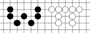

WPI Go

Upcoming
-
Beginner's Night (2009/02/20)
We'll have a Beginner's Night on Friday, February 20, 2009 at 7pm, on
the 2nd floor of the Campus Center. Beginners are most welcome! Come
by and learn the rules of the game and meet other people.
Resources
- intro.pdf includes a printable 9x9 board
on one side, and a quick introduction on the other.
Other links
webmaster: dyoo at cs.wpi.edu